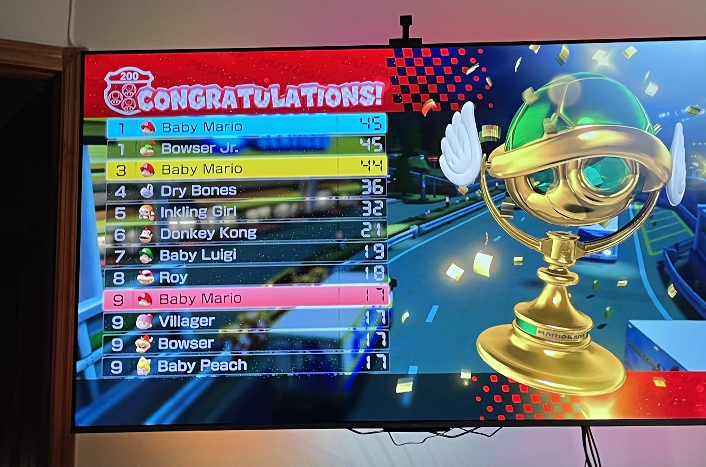

⣤⣄⠀⠀⠀⠀⠀⠀⢀⣤⠶⠒⠚⠛⠒⠲⢦⣄
⣤⡄⠀⠛⡿⠀⠀⠀⠀⠀⣴⠋⠀⠀⠀⠀⠀⠀⠀⠀⠈⠳⣄
⠙⢻⡀⠀⣧⠀⠀⠀⠀⢰⡇⠀⠀⠀⣠⡴⠞⠛⠓⢶⣄⠀⠸⣆
⠈⢳⠶⠛⠛⠶⣄⠀⠸⡇⠀⢀⡾⠁⢀⡴⠶⢶⡄⠙⣧⠀⢻⠀⠀⠀
⣟⠀⠀⠀⠀⠹⣦⡤⠿⠀⢸⡇⢠⡟⢀⡾⠀⣿⠀⣿⠀⣼⠁⠀⠀
⢻⡀⠀⠀⠀⠀⠻⣄⠀⠀⠸⣇⠀⢷⡀⠛⠛⢁⣴⠃⣠⠏⠀⠀⠀
⠻⣆⠀⠀⠀⠀⠈⠳⢦⣄⣙⣷⣄⣉⠛⠛⣋⣠⡴⠋⠀⠀⠀⠀
⠈⠛⢦⣄⡀⠀⠀⠀⠀⠀⠀⠉⠉⠙⠛⠛⠛⠓⠒⠶⠞⣻⠂
⠘⢧⣤⡤⠖⠓⠶⠤⠶⠒⠶⠴⠞⠛⠶⠞⠛⠛⠛⠁⠀
september consisted of a lot of rain. the kind of rain that makes you want to lay on a couch for a long time.
i happened to move across the street from two friends i made in middle school. what a coincidence. together, we play a lot of mario kart. this is their huge flat screen tv and just one of my many losses. at first glance, it seems like i placed above three other people, but that is not the case. i am the baby mario in 9th place. but there are three other players also in 9th place. as much as i despise having to play this game, i think about it all the time 𓆑༘ ⋆｡˚𓍊𓋼𓍊ִֶ 𓂃⊹ ೃ࿔₊•
 when my thumbs start to hurt .